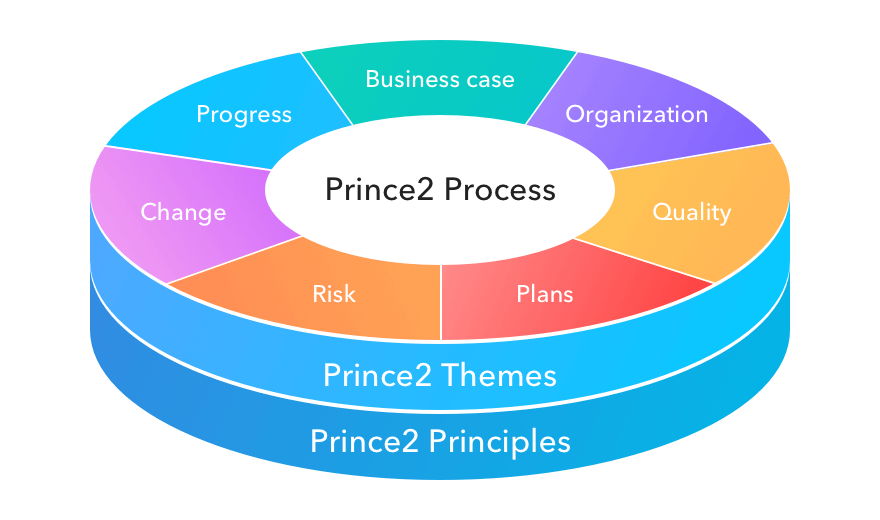

Prosjektledelse og Prosjektarbeid
Prosjektledelse og prosjektarbeid er avgjørende for gjennomføringen av prosjekter. Prosjektledelse handler om å kunne lede og koordinere prosjekter fra startfasen til sluttfasen. Når man skal jobbe med et prosjekt er det alltid lurt å opprette en gruppekontrakt. Dette gjør man for å kunne opprettholde en best mulig struktur og holdning blant folkene som jobber på prosjektet. Det er en effektiv måte å få folk til å ta et prosjekt på alvor.
Fire hovedfaser
Vi deler ofte prosjektet inn i fire hovedfaser, her skal vi fortelle litt om dem, og gi et eksempel for et webutviklingsprosjekt.
1. Oppstart
Denne fasen handler om å sette rammene for og rundt prosjektet.
Her er det viktig at man definerer prosjektets formål, når det
skal starte og ikke minst når det skal avsluttes.
Eksempel: I et webutviklingsprosjekt bruker
man gjerne denne delen til å gjennomføre en behovsanalyse for å
finne ut hva nettsiden skal inneholde og hvem som skal bruke den.
2. Planlegging
I denne fasen skal prosjektet brytes ned i konkrete oppgaver, hvor
det skal lages en detaljert plan for gjennomføringen. Denne delen
av prosjektets livssyklus er utrolig viktig ettersom det her er
man legger milepæler, finner ut hvem og hva man trenger for
prosjektet, hvilke risikoer man må tenke gjennom, og fordele alle
rollene i prosjektet.
Eksempel: I et webutviklingsprosjekt skal
man da velge bruk av teknologi, som programmeringsspråk, samt
fordele arbeidsoppgaver mellom utviklere og prosjektlederen.
3. Gjennomføring
Dette er fasen hvor det faktiske arbeidet blir gjennomført. Her
skal prosjektleder sørge for at prosjektet er gående og at alt går
etter planen. Selv om man legger en flott plan og tror alt kommer
til å gå på skinner gjennom prosjektet, gjør det sjeldent faktisk
det. Derfor er det viktig å være forberedt på feil og være
løsningsorientert for å løse dem.
Eksempel: I et webutviklingsprosjekt bruker
man denne delen for å utvikle nettsiden, style den opp og teste
den på ulike enheter.
4. Avslutning
I den siste fasen skal man avslutte prosjektet. Dette betyr at man
prioriterer å fullføre alle oppgavene, evaluerer prosjektets
suksess og lærdommer, og til slutt leverer det avsluttende
produktet til kunden.
Eksempel: I et webutviklingsprosjekt bruker
man denne avsluttende delen for å teste etter feil og levere det
ferdige produktet til kunden.
(eStudie.no, n.d.)
PRINCE2
PRINCE2 står for Projects IN Controlled Environments, og er et internasjonalt anerkjent rammeverk for prosjektledelse som sikrer at prosjektet får god struktur og kontroll gjennom alle fasene. Rammeverket er fleksibelt og kan brukes på alle slags prosjekter uavhengig av størrelsen og kompleksiteten på prosjektet.
Syv prosesser i PRINCE2
- Oppstart av prosjektet
- Eierstyring av prosjektet
- Initiere et prosjekt
- Kontrollere en fase
- Styre produktleveranser
- Lede en faseovergang
- Avslutte prosjektet
PRINCE2 gir en strukturert og kontrollert tilnærming til de fire hovedfasene i prosjektarbeidet og er med på å sikre en vellykket gjennomføring.
Oppsummering
Prosjektledelse og prosjektarbeid krever god struktur, kommunikasjon og evne til å løse problemer med strak arm. Ved å følge de fire nevnte fasene kan man sikre en god og ordentlig gjennomføring av et prosjekt, og ved å ta i bruk PRINCE2 sikrer man seg et detaljert rammeverk som sørger for kontroll og kvalitet i hver fase.